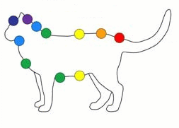

This aura of protection works best when begun and performed during a waxing Moon [make sure the moon is not void of course when you begin this working] and
should be applied when your aura is completely eradicated of any negative
energy. [See "Cleaning your Aura"]
In addition, if you have any familiars [animals who are close to you], it is also important to clean their auras and souls as well. [See below].
Open with the following prayer:
Hear me oh Great and Mighty Satan. I ask your help in returning these curses, amplified to the senders who have attacked us for doing your work. You know who they are. They will know your wrath. I ask that you send a Demon to me to take and deliver the curses and thoughtforms that I have cleaned from my aura and soul directly to those who have sent them. O Mighty Satan, fill me with truth, wisdom and understanding, keep me strong in my faith and service, that I may abide always in Thee with Praise, Honor, and Glory be given Thee forever and ever.
1. Visualize a brilliantly bright Sun directly above your head.
Affirm:
“The light is cleaning and removing any and all negative energy, thoughtforms, bindings, ill will, and
curses on or connected to my soul that have been directed to me, and is
returning them to the senders.” State this 3 times.
2. Visualize this Sun descending down into your head and pushing down any dirt, filth, thoughtforms [thoughtforms can appear as chunks of filth or for those who are advanced, you can see them as they may be shapes, symbols, like elementals, or otherwise]. This will be gray or black energy [as it collects], and will get darker as it descends.
3. Visualize the brilliant light descending through your throat, down through your shoulders, chest, then stomach area, hips and all the way down through your feet, pushing out all of the dirt from your aura and soul.
4. Move the filth beside you, in a pile.
5. DO THIS THREE TIMES, steps 1 through 4. Keep piling the dirt.
6. When you are finished, your aura and soul should be much brighter and cleaner. You can either ask for a Demon to take the energy and to return it to the senders [especially if you're new], OR, you can visualize it shooting away from you, directing it to the senders.
For Familiars:

The above illustration is both the same for a cat or a dog, a horse and all four legged animals. Snakes and other reptiles have their chakras lined up along their bodies the same way. Some members also have spiders. For cleaning a spider familiar, just visualize the spider engulfed in a brilliant Sun and pull the Sun from its body, pushing out any negative energies. The same goes for other small familiars.
You should do the exact same ritual above for your familiar/s. This is extremely important. You can also use an astral brush or comb [visualize this] in addition and brush any astral negativities from his/her fur, piling it up in the same way, and returning it to the senders.
Your familiar protects your soul. It is important to clean his/her aura frequently. Also, to build a powerful aura of protection around him/her. This should be done every day during a waxing Moon. I will post this shortly.